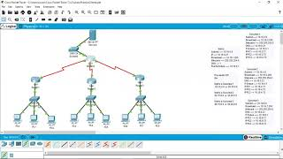
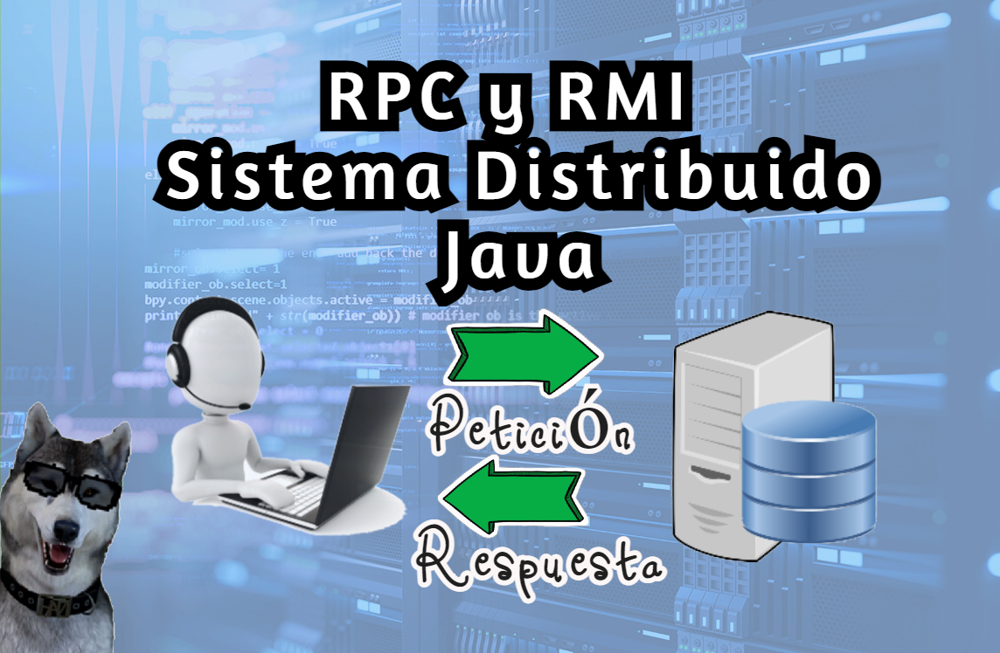

Sistema Operativo Distribuido
Curso

Como establecer comunicación entre cliente-servidor levantando DNS y HTTP
En este video pondremos en práctica lo aprendido en el curso de Subneteo, en la cuál se pondrá en práctica una comunicación Cliente Servidor levantando un DNS y una pequeña modificación del hhtp
¿Cómo configurar 🤯 VLAN y DNS en 3 CAPAS?
En este video aprenderemos cómo configurar Vlan en 3 y estas son:
- Capa Núcleo
- Capa Distribución
- Capa Acceso
VLAN nos brinda seguridad en las redes internas de una empresa para el acceso no autorizado

RPC y RMI en Java
En este video se hará una práctica estableciendo comunicación Cliente Servidor en Java bajo comunicación remota
Para la práctica se necesitará 2 computadoras ya sean físicas o virtuales